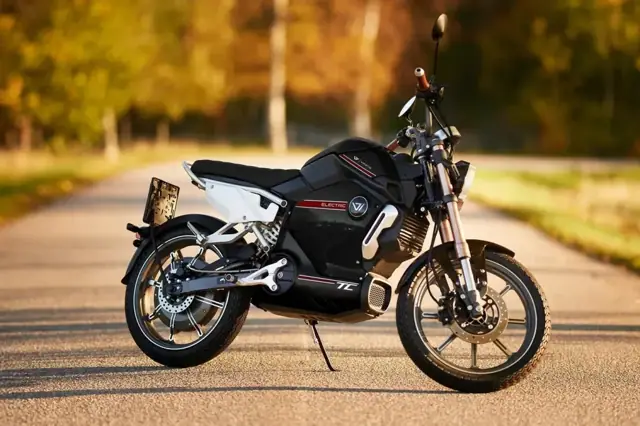
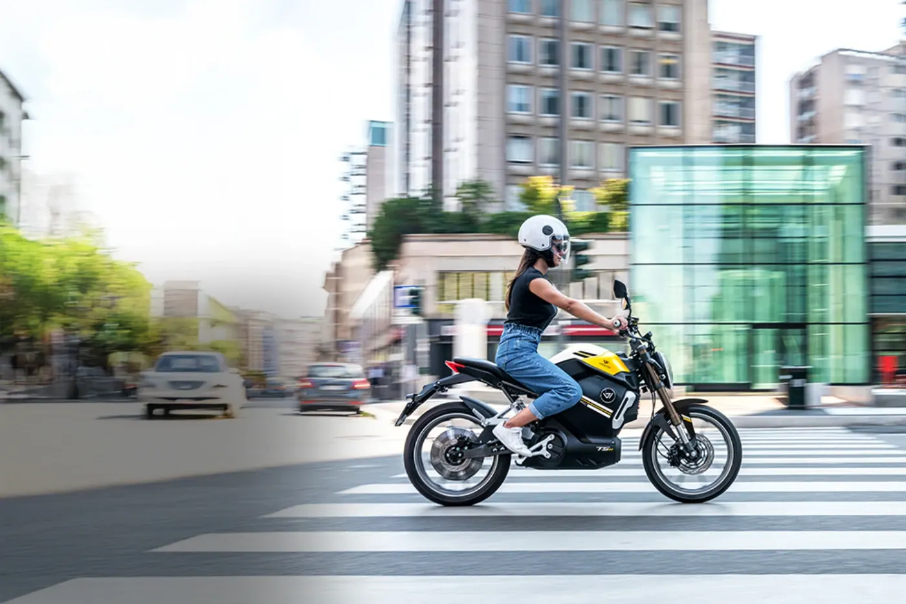
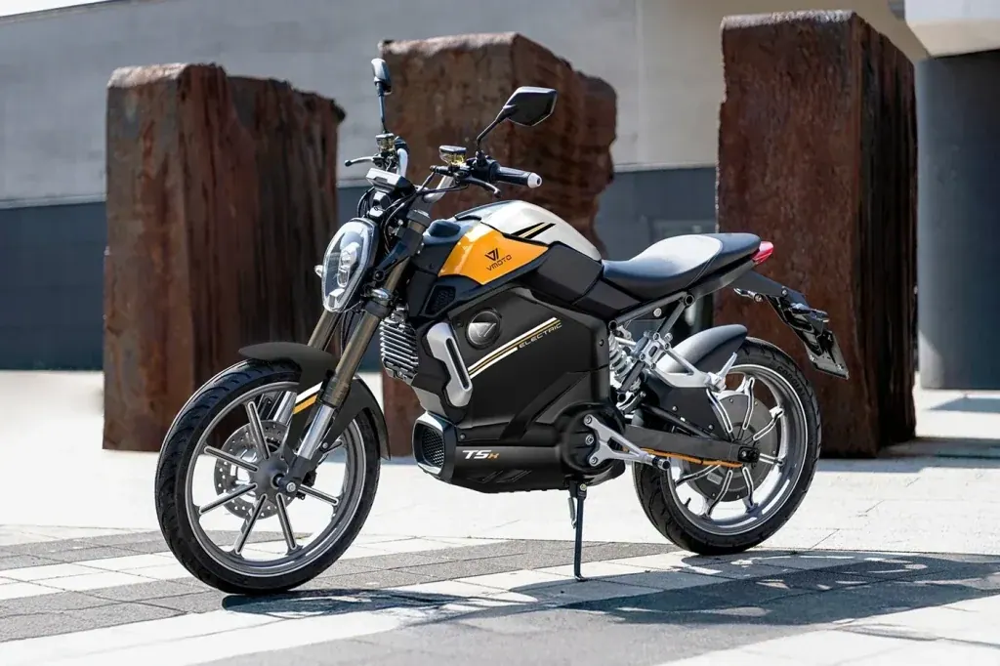
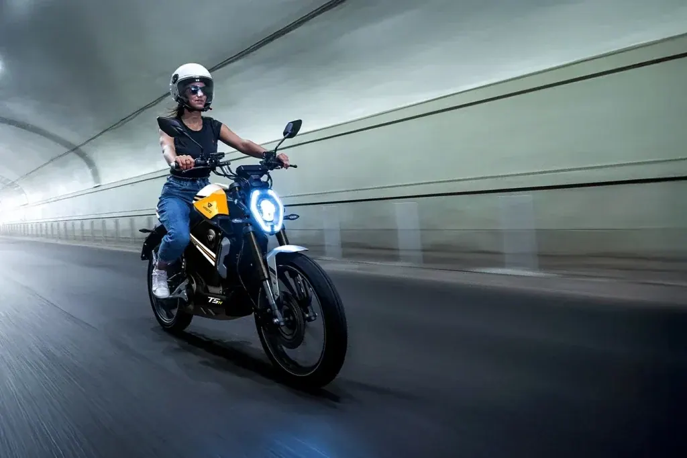
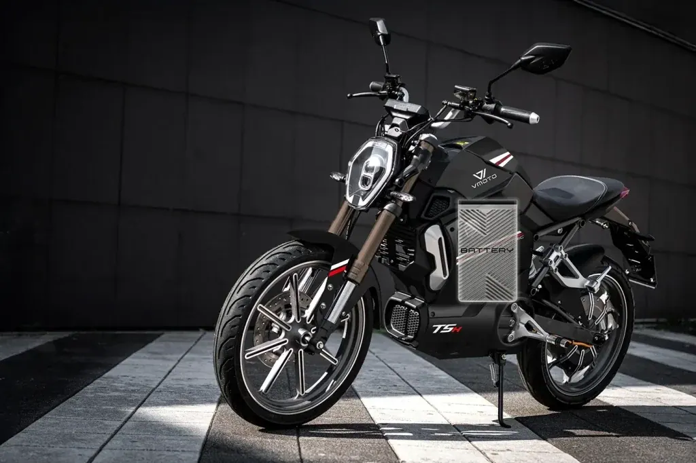
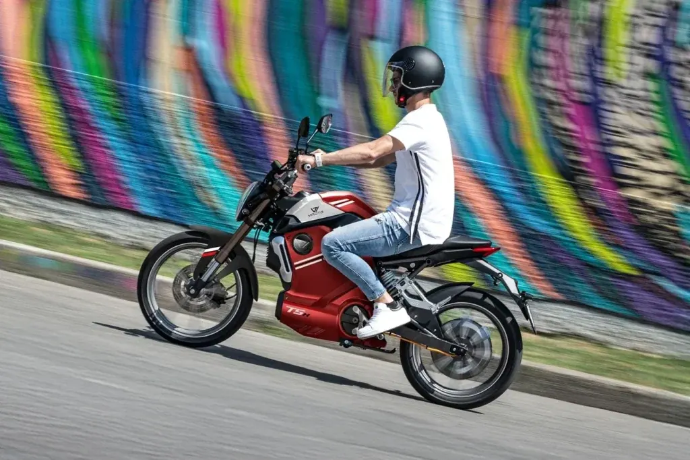

Vmoto
TC
AM Eléctrica · 3 kW · Deportivas
Propuesta de OpsPilot para Expomoto Córdoba, en revisión. No es la web oficial: expomotocordoba.es

Vmoto
La moto perfecta para quienes valoran tanto el estilo como el placer de conducción
Precio y financiación: te los damos al momento por teléfono (pendientes de publicar en la web).




La TSX representa el equilibrio perfecto entre estética deportiva e innovación tecnológica. Sus líneas agresivas y dinámicas combinan elegancia y modernidad, dando forma a una moto eléctrica pensada para quienes buscan destacar también en movimiento.
Equipada con un motor eléctrico de 3 kW, la TSX ofrece una conducción potente y reactiva, con un par máximo de 138 Nm. Su velocidad de hasta 45 km/h la convierte en la aliada perfecta para la movilidad urbana.
Optimiza la eficiencia del motor con sus 3 modos de conducción que se adaptan a cada trayecto, equilibrando rendimiento y eficiencia.
La TSX incorpora una batería de litio de 72V/24Ah, con opción de añadir una segunda para alcanzar hasta 103 km de autonomía**. Su sistema modular ofrece flexibilidad y la hace perfecta para el uso diario.
Su motor eléctrico y alto par permiten a la TSX afrontar inclinaciones de hasta 11° sin esfuerzo. Ideal para ciudad y recorridos con desnivel, manteniendo siempre una conducción estable y fluida.
El sistema de suspensión avanzado se adapta a cualquier superficie, absorbiendo irregularidades y garantizando una conducción cómoda y segura en todo momento.
| Motor | motor en rueda |
|---|---|
| Homologación | L1e – (equivalente a 50cc) |
| Potencia nominal | 2.5 kW |
| Potencia máxima | 3.0 kW |
| Refrigeración | Aire |
| Velocidad máxima | 45 km/h |
| Autonomía | 103 km homologado con 2 baterías |
| Ángulo de pendiente superable | 11° |
| Modelo de batería | ATL Ion Litio |
| Número de baterías | 2 |
| Capacidad por batería | 1,7 kWh (72V 24Ah) |
| Tiempos carga por batería y cargador disponible | 3 h con el cargador por defecto 70V10A (35300-QMC-A000) |
| Suspensión delantera | Invertida doble brazo hidráulico |
| Suspensión trasera | Mono amortiguador central hidráulico |
| Frenos delantero | Disco |
| Freno trasero | Disco CBS |
| Neumáticos | Delantera 90/80-17 | Trasera 110/70-17 |
| Llantas | Delantera 2.15-17 | Trasera 3.0-17 |
| Distancia entre ejes | 1320 mm |
| Peso orden de marcha (sin baterías) | 76 kg |
| Largo x ancho x alto | 1895mm x 703mm x 1066mm |
| Peso máximo admisible (mmta) | 255 kg |
| Ocupantes | 2 |
| Colores | Negro, Rojo |
Datos de la marca, tal como se publican en expomotocordoba.es.